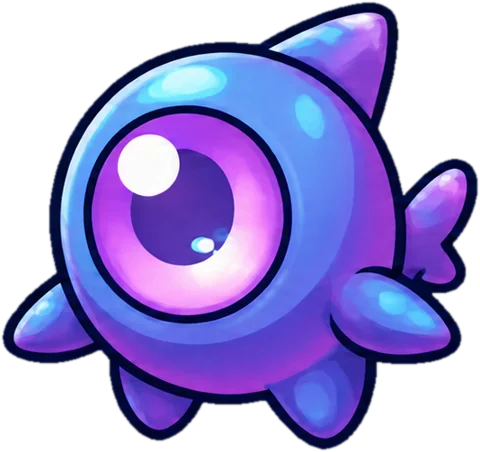

 Water
Water Psychic
PsychicTap a stage to read its story.
Orblet is a tiny round creature with one enormous violet eye that fills most of its body. Four stubby fins keep it bobbing just off the seafloor while its soft purple skin pulses faintly with each thought. In Coral Bay's shallows it floats between the reef columns, fixing that giant unblinking eye on anything that moves - not to hunt, but out of pure bottomless curiosity. Guardians say Orblet memorizes the shape of every fish it meets, storing them somewhere in the inky depths of its mind.
Field note: Orblet never blinks - researchers believe it photographs a full scene with each long stare.
Coral Bay. Orblet and its family are found in the Coral Bay. See everyone who lives there.
Share a Bond Food that matches its types to become friends. Orblet loves:
A Bond Food is not a trick. It joins your spirit with the Kimuro's spirit, and only when it chooses you.
Print the Kimuro adventure packs: mazes, cards, a board game and Bond Mark medals.
See the printable packs